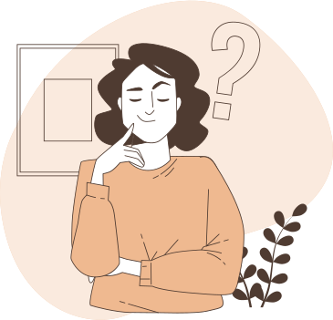

Vous vous sentez impuissants face au comportement de votre enfant ?
Son manque d'organisation, de motivation et la constante procrastination le laissent à la traîne,
avec ses devoirs inachevés qui s'accumulent ?
Réseaux affiliés
Votre situation
"Mon enfant accumule les échecs",
"Il ne consacre pas assez de temps au travail scolaire",
"Comment l'aider à s'organiser ?"
Ces phrases résonnent avec vous.
Ces problèmes semblent sans fin et vous vous sentez débordés.
Les contraintes de la vie quotidienne vous accablent, alors que vous devez également gérer les
défis de votre enfant.
Vous n'êtes plus seuls à affronter cette situation.
Pourquoi faire appel à un coach ?
Et si vous pouviez faire prendre conscience à votre enfant de sa situation, de l'importance de ses
choix ?
Faire en sorte qu'il travaille sur lui pour s'améliorer non seulement dans sa scolarité mais aussi dans
sa vision des choses et dans la manière d'appréhenderle monde quil'entoure.
Prendre du recul
Devenir l'accompagnateur d'un jeune dans le changement d'un comportement, d'une situation.
Faciliter la communication
Être un facilitateur de la communication grâce à la prise de recul, le non-jugement et sa
bienveillance
Améliorer la situation
Amener le jeune vers une amélioration de sa situation grâce à la levée de blocages, de croyance
limitantes qui l'empêchent d'agir.
Responsabiliser le jeune
L'objectif du coach scolaire est de rendre le jeune autonome et responsable de ses actes, de ses
comportements

On peut faire appel à un coach scolaire pour les 3 niveaux d'étude : primaire, secondaire et
supérieur.
C'est quoi du coaching scolaire ?
Le coach et le jeune travaillent ensemble pour aller d'une situation présente vers une situation
désirée.
En tant que coach scolaire, j'agis sur le comment faire pour aller mieux et non sur les causes du
mal- être.
J'aide le jeune à identifier ses importants, à redonner du sens à ce qu'il fait et à révéler son
potentiel.
Mon rôle amène à :
Écouter
Comprendre
Amener dans l'action
Pourquoi faire appel à moi ?
Philippe est un coach formidable, très professionnel et capable d'aider les jeunes à
retrouver leurs
repères. Je recommande vivement.
Laurent Cattelain, accompagnateur de créateur d'entreprises et fondateur de la
société Synapse
Expertise
Je suis Philippe Aerts, le coach scolaire qui aide les adolescents âgés de 12 à 18 ans à surmonter leurs
défis et à vaincre la procrastination, cette habitude de toujours reporter ses tâches scolaires.
Aider les gens fait partie de mon ADN, en particulier les personnes fragilisées, comme ces jeunes qui
souffrent d'un divorce familial.
La procrastination ? Je connais aussi !
Pour l'avoir vécue particulièrement durant mes études, je peux dire que cela a été un sérieux handicap
(si seulement j'avais eu un coach !..) Son origine était sans doute le mal-être engendré par toutes ces
périodes de frustrations, par ces angoisses et ces peurs, le manque de confiance en moi et de
considération.
Les bénéfices d'un coaching scolaire
Imaginez votre enfant retrouver la confiance en lui, réussir ses études et développer des
compétences d'organisation et de gestion du temps qui dureront toute une vie.
Identifier les croyances limitantes et l'amener à révéler son plein potentiel
Travailler la confiance en soi, l'estime de soi et la motivation
Gérer efficacement le temps et l'organisation de travail
Trouver un sens à donner à ses études et l'orientation
Améliorer la relation parents-enfant
Je suis un partenaire digne de confiance. J'aide les jeunes à s'exprimer librement en toute confidentialité.
je suis aussi un facilitateur de la communication et je peux jouer le rôle d'interface entre le jeune, ses
parents et l'école.
Écoute, observation, bienveillance, confidentialité : je m'engage totalement.
Formé aux diverses techniques (PNL, analyse transactionnelle, coaching scolaire, coaching de vie, etc.), je
puise également mes ressources dans mon expérience de vie et professionnelle.
Prêt à agir contre la procrastination ?
Ne laissez pas la procrastination entraver le chemin vers le succès scolaire de votre adolescent.
Planifiez un rendez-vous découverte pour discuter des défis et des objectifs spécifiques, et
découvrez comment le coaching scolaire peut apporter des solutions concrètes dès maintenant.
Je suis coach scolaire et j'accompagne les adolescents âgés de 12 à 18 ans en difficulté scolaire et
en proie à la procrastination, c'est- à- dire le fait de remettre constamment ses tâches au
lendemain.